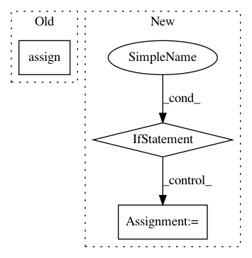

0087cadc21b723f49bff2c56416a2412e4db11e7,open_seq2seq/optimizers/optimizers.py,,optimize_loss,#Any#Any#Any#Any#Any#Any#Any#Any#Any#Any#Any#Any#,96
Before Change
trainable=False,
validate_shape=bool(grad.get_shape())
)
accum_ops.append(tf.assign(grad_accum, grad_accum + grad / iter_size))
grads_and_vars_accum.append((grad_accum, var))
accum_op = tf.group(accum_ops)
After Change
trainable=False,
validate_shape=bool(var.get_shape())
)
if isinstance(grad, tf.IndexedSlices):
add_grads = tf.scatter_nd_add(grad_accum, grad.indices,
grad.values / iter_size)
else:
add_grads = grad_accum + grad / iter_size
accum_ops.append(tf.assign(grad_accum, add_grads))
grads_and_vars_accum.append((grad_accum, var))
accum_op = tf.group(accum_ops)
In pattern: SUPERPATTERN
Frequency: 4
Non-data size: 3
Instances
Project Name: NVIDIA/OpenSeq2Seq
Commit Name: 0087cadc21b723f49bff2c56416a2412e4db11e7
Time: 2018-06-15
Author: igor.a.gitman@gmail.com
File Name: open_seq2seq/optimizers/optimizers.py
Class Name:
Method Name: optimize_loss
Project Name: microsoft/nni
Commit Name: 9d468d2c742491af2d2f506c648ddc95ffea6a64
Time: 2019-10-20
Author: lanny@mail.hfut.edu.cn
File Name: src/sdk/pynni/nni/compression/tensorflow/builtin_pruners.py
Class Name: SensitivityPruner
Method Name: calc_mask
Project Name: NVIDIA/OpenSeq2Seq
Commit Name: 361d87cc6d4fe86c82204becce00f4d595e1c459
Time: 2019-01-09
Author: jasoli@nvidia.com
File Name: open_seq2seq/utils/helpers.py
Class Name:
Method Name: _restore_embed
Project Name: deepmind/sonnet
Commit Name: 484ffb3eae65a09c717a6c823dcc888d5750df6c
Time: 2019-10-16
Author: tomhennigan@google.com
File Name: sonnet/src/momentum.py
Class Name: Momentum
Method Name: apply